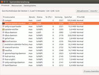
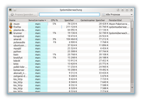
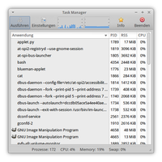
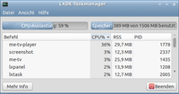

Prozesse
Manchmal möchte man wissen, welche Programme auf dem System aktiv sind und was sie so tun. So kann man Prozesse, die z.B. sehr viel Prozessorlast erzeugen, identifizieren und eventuell gezielt beenden. Hierfür gibt es grafische Oberflächen sowie einige Programme für die Kommandozeile. Einige Möglichkeiten werden hier beschrieben.
Grafische Systemüberwachung¶
Alle Desktop-Umgebungen bieten Programme an, die laufende Prozesse und ihre Abhängigkeiten anzeigen. Diese informieren z.T. auch über die von einem Prozess geöffneten Dateien und belegten Speicherfelder. Außerdem können die Verteilung von Prioritäten beobachtet und Signale gesendet werden, um beispielsweise Programme zu unterbrechen.

Unity / GNOME¶
Die Systemüberwachung von GNOME informiert umfassend über alle aktuellen Prozesse. Diese lassen sich auch aus dem Programm heraus manipulieren. Des weiteren kann man sich Statistiken über die Systemauslastung anzeigen, die Ressourcen- und die Festplattenbelegungen grafisch anzeigen lassen. Die GNOME-Systemüberwachung findet man unter
"System -> Systemverwaltung -> Systemüberwachung"
Alt + F1 , ⏎ , s, y, s... tippen
Das entsprechende Paket nennt sich gnome-system-monitor.

KDE¶
Unter KDE ruft ein Druck auf die Tasten Strg + Esc oder ein Klick auf das Symbol in KRunner die Systemüberwachung auf. Diese listet in einer Tabelle zu den laufenden Prozessen den Ressourcenverbrauch auf. Welche Ressourcen angezeigt werden, lässt sich über einen Rechtsklick auf den Tabellenkopf festlegen. Diese Prozesstabelle findet sich ebenfalls unter
"K-Menü -> System -> Systemmonitor"
Der Systemmonitor ksysguard geht allerdings weiter: er erlaubt die verschiedensten Parameter grafisch darzustellen oder in eine Datei zu schreiben, sowie die Überwachung auch mehrerer entfernter Rechner. Dazu öffnet man zuerst ein neues Arbeitsblatt "Datei -> Neues Arbeitsblatt" und zieht nun die verschiedenen Sensoren aus dem Sensorbrowser auf die freien Flächen im Arbeitsblatt. Weitere Hilfe findet sich im Handbuch des Programms.

Xfce¶
Die Prozessüberwachung von Xfce lässt sich in Xubuntu im Menü unter
"Applications -> System -> Task Manager"
aufrufen. Diese bietet, ähnlich wie der LXDE-Taskmanager, Informationen zu Prozessorauslastung. Speicher-Belegung, sowie eine Auflistung der laufenden Prozesse. Auch hier lassen sich einzelne Prozesse steuern, indem man diese beenden, oder aber auch priorisieren kann. Über die Einstellungen lässt sich zudem die Ansicht konfigurieren, sowie die Aktualisierungsrate einstellen.

LXDE¶
Die Desktop-Umgebung LXDE und das darauf basierende Lubuntu bieten mit dem
"Systemwerkzeuge -> Taskmanager"
Informationen zu Prozessor-Auslastung und Speicher-Belegung sowie eine Übersicht der laufenden Prozesse. Diese sind leider nicht grafisch aufbereitet wie bei den anderen Desktop-Umgebungen. Damit fehlt im Gegensatz zur Systemüberwachung auch ein zeitlicher Verlauf. Nach Auswahl eines Prozesses stehen über das Kontextmenü ( ) die üblichen Möglichkeiten zur Prozesssteuerung zur Verfügung.
) die üblichen Möglichkeiten zur Prozesssteuerung zur Verfügung.
Terminal¶
Für die Kommandozeile gibt es diverse Befehle, die in eigenen Artikeln erklärt werden:
ps - Auflistung aller gerade laufenden Prozesse
top - Sich aktualisierende Liste der laufenden Prozesse samt Leistungsbedarf
glances - Systemmonitor mit Echtzeit-Statistiken
lsof - Anzeige offener Dateien eines Prozesses bzw. Prozesszugriffe auf eine Datei
vmstat - Auskunft über Engpässe in der Systembelastung
- Erstellt mit Inyoka
-
 2004 – 2017 ubuntuusers.de • Einige Rechte vorbehalten
2004 – 2017 ubuntuusers.de • Einige Rechte vorbehalten
Lizenz • Kontakt • Datenschutz • Impressum • Serverstatus -
Serverhousing gespendet von